Image Kit
SFR
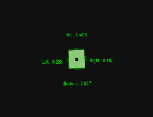
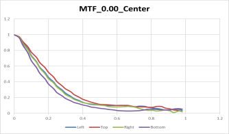
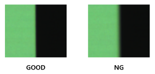
- Tested according to ISO-12233:2023 standard
- Measuring resolution with chart image including edges
Distortion
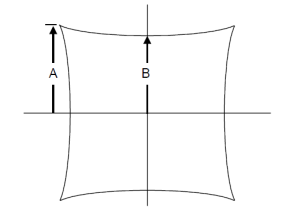
- Check the ratio of A and B using the SMIA standard inspection method
Defect
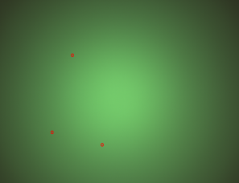
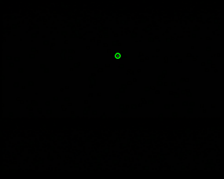
- This occurs when there is a defect in the sensor's pixels or foreign matter on the sensor surface.
- Perform tests in bright or dark environments
Stain (Blemish)
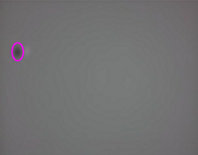
- Defects due to foreign matter such as dust on the lens or between the lens and the image sensor
Optical Center
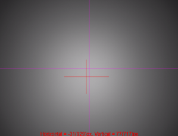
- Determine the location of the brightest area in the image and check how far it deviates from the center of the image.
Shading (Vignetting)
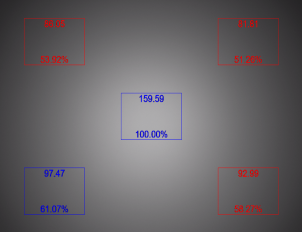
- Test is conducted by comparing the difference in brightness between the central and peripheral areas.
Fixed Pattern Noise
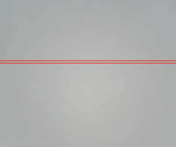
- This occurs because the pixel characteristics of the image sensor are not completely uniform.
- Perform tests in bright or dark environments
Uniformity
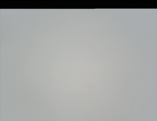
- Check the uniformity of the image by measuring the standard deviation of the image.